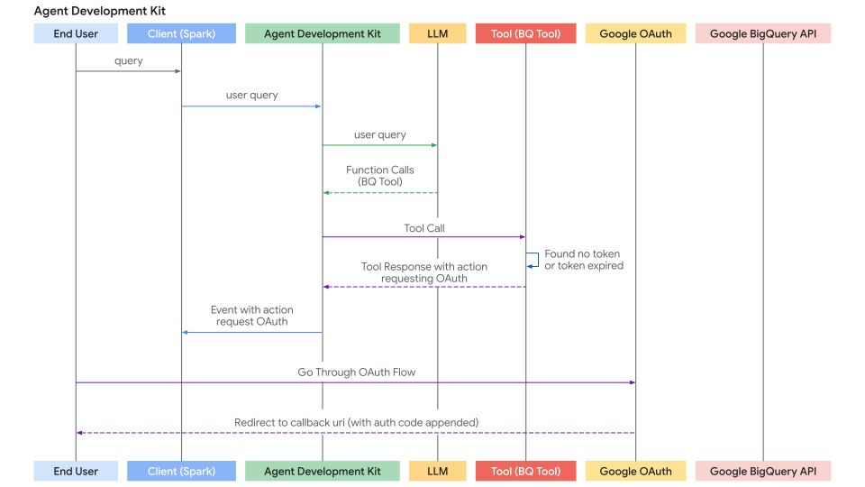

工具认证指南
核心概念
许多工具需要访问受保护资源（如Google Calendar中的用户数据、Salesforce记录等），因此需要进行身份验证。ADK提供了一套系统来安全处理各种认证方式。
关键组件包括：
AuthScheme：定义API期望的认证凭证方式（例如在请求头中的API Key、OAuth 2.0 Bearer令牌等）。ADK支持与OpenAPI 3.0相同的认证方案类型。要了解每种凭证类型的详细信息，请参阅OpenAPI文档：认证。ADK使用特定类如APIKey、HTTPBearer、OAuth2、OpenIdConnectWithConfig。AuthCredential：保存启动认证流程所需的初始信息（例如应用的OAuth客户端ID/密钥、API密钥值）。它包含一个auth_type（如API_KEY、OAUTH2、SERVICE_ACCOUNT）用于指定凭证类型。
通用流程是在配置工具时提供这些详细信息。ADK会在工具发起API调用前，自动尝试将初始凭证交换为可用凭证（如访问令牌）。对于需要用户交互的流程（如OAuth授权），会触发一个涉及Agent Client应用的特定交互流程。
支持的初始凭证类型
- API_KEY：用于简单的键值对认证，通常无需交换
- HTTP：可表示Basic Auth（不建议/不支持交换）或已获取的Bearer令牌。如果是Bearer令牌则无需交换
- OAUTH2：用于标准OAuth 2.0流程，需要配置（客户端ID、密钥、作用域）并常触发用户授权的交互流程
- OPEN_ID_CONNECT：基于OpenID Connect的认证，类似OAuth2，常需配置和用户交互
- SERVICE_ACCOUNT：用于Google云服务账户凭证（JSON密钥或应用默认凭证），通常交换为Bearer令牌
在工具上配置认证
定义工具时设置认证：
-
RestApiTool/OpenAPIToolset：在初始化时传入
auth_scheme和auth_credential -
GoogleApiToolSet工具：ADK内置了一方工具如Google Calendar、BigQuery等，使用工具集的特定方法
-
APIHubToolset/ApplicationIntegrationToolset：如果API Hub管理的API或应用集成提供的API需要认证，在初始化时传入
auth_scheme和auth_credential
警告
根据会话存储后端（SessionService）和整体应用安全状况，直接存储敏感凭证如访问令牌（特别是刷新令牌）可能存在安全风险。
InMemorySessionService：适合测试开发，但进程结束时数据会丢失，风险较低因为是临时性的- 数据库/持久存储：强烈建议在使用强大加密库（如
cryptography）存储到数据库前加密令牌数据，并安全管理加密密钥（如使用密钥管理服务） - 安全密钥存储：生产环境中最推荐的方式是将敏感凭证存储在专用密钥管理器（如Google云密钥管理器或HashiCorp Vault）中。工具可能只在会话状态中存储短期有效的访问令牌或安全引用（而非刷新令牌本身），需要时从安全存储获取必要密钥
旅程1：使用认证工具构建智能体应用
本节重点介绍如何在智能体应用中使用需要认证的现有工具（来自RestApiTool/ OpenAPIToolset、APIHubToolset、GoogleApiToolSet或自定义FunctionTools）。主要职责是配置工具并处理交互式认证流程的客户端部分（如果工具需要）。

1. 配置带认证的工具
向智能体添加认证工具时，需提供其所需的AuthScheme和应用的初始AuthCredential。
A. 使用基于OpenAPI的工具集（OpenAPIToolset、APIHubToolset等）
在工具集初始化时传入认证方案和凭证。工具集会将其应用于所有生成的工具。以下是ADK中创建带认证工具的几种方式：
创建需要API密钥的工具：
from google.adk.tools.openapi_tool.auth.auth_helpers import token_to_scheme_credential
from google.adk.tools.apihub_tool.apihub_toolset import APIHubToolset
auth_scheme, auth_credential = token_to_scheme_credential(
"apikey", "query", "apikey", YOUR_API_KEY_STRING
)
sample_api_toolset = APIHubToolset(
name="sample-api-requiring-api-key",
description="使用API密钥保护的API工具",
apihub_resource_name="...",
auth_scheme=auth_scheme,
auth_credential=auth_credential,
)
创建需要OAuth2的工具：
from google.adk.tools.openapi_tool.openapi_spec_parser.openapi_toolset import OpenAPIToolset
from fastapi.openapi.models import OAuth2
from fastapi.openapi.models import OAuthFlowAuthorizationCode
from fastapi.openapi.models import OAuthFlows
from google.adk.auth import AuthCredential
from google.adk.auth import AuthCredentialTypes
from google.adk.auth import OAuth2Auth
auth_scheme = OAuth2(
flows=OAuthFlows(
authorizationCode=OAuthFlowAuthorizationCode(
authorizationUrl="https://accounts.google.com/o/oauth2/auth",
tokenUrl="https://oauth2.googleapis.com/token",
scopes={
"https://www.googleapis.com/auth/calendar": "日历作用域"
},
)
)
)
auth_credential = AuthCredential(
auth_type=AuthCredentialTypes.OAUTH2,
oauth2=OAuth2Auth(
client_id=YOUR_OAUTH_CLIENT_ID,
client_secret=YOUR_OAUTH_CLIENT_SECRET
),
)
calendar_api_toolset = OpenAPIToolset(
spec_str=google_calendar_openapi_spec_str, # 填入openapi规范
spec_str_type='yaml',
auth_scheme=auth_scheme,
auth_credential=auth_credential,
)
创建需要服务账户的工具：
```py from google.adk.tools.openapi_tool.auth.auth_helpers import service_account_dict_to_scheme_credential from google.adk.tools.openapi_tool.openapi_spec_parser.openapi_toolset import OpenAPIToolset
service_account_cred = json.loads(service_account_json_str)
auth_scheme, auth_credential = service_account_dict_to_scheme_credential( config=service_account_cred, scopes=["https://www.googleapis.com/auth/cloud-platform"], ) sample_toolset = OpenAPIToolset( spec_str=sa_openapi_spec_str, # 填入openapi规范 spec_str_type='json', auth_scheme=auth_scheme, auth_credential=auth_credential, ) ```
创建需要OpenID连接的工具：
from google.adk.auth.auth_schemes import OpenIdConnectWithConfig
from google.adk.auth.auth_credential import AuthCredential, AuthCredentialTypes, OAuth2Auth
from google.adk.tools.openapi_tool.openapi_spec_parser.openapi_toolset import OpenAPIToolset
auth_scheme = OpenIdConnectWithConfig(
authorization_endpoint=OAUTH2_AUTH_ENDPOINT_URL,
token_endpoint=OAUTH2_TOKEN_ENDPOINT_URL,
scopes=['openid', 'YOUR_OAUTH_SCOPES"]
)
auth_credential = AuthCredential(
auth_type=AuthCredentialTypes.OPEN_ID_CONNECT,
oauth2=OAuth2Auth(
client_id="...",
client_secret="...",
)
)
userinfo_toolset = OpenAPIToolset(
spec_str=content, # 填入实际规范
spec_str_type='yaml',
auth_scheme=auth_scheme,
auth_credential=auth_credential,
)
B. 使用Google API工具集（如calendar_tool_set）
这些工具集通常有专用配置方法。
提示：创建Google OAuth客户端ID和密钥的方法参见：获取Google API客户端ID
# Example: Configuring Google Calendar Tools
from google.adk.tools.google_api_tool import calendar_tool_set
client_id = "YOUR_GOOGLE_OAUTH_CLIENT_ID.apps.googleusercontent.com"
client_secret = "YOUR_GOOGLE_OAUTH_CLIENT_SECRET"
calendar_tools = calendar_tool_set.get_tools()
for tool in calendar_tools:
# Use the specific configure method for this tool type
tool.configure_auth(client_id=client_id, client_secret=client_secret)
# agent = LlmAgent(..., tools=calendar_tools)
2. 处理交互式OAuth/OIDC流程（客户端）
如果工具需要用户登录/授权（通常是OAuth 2.0或OIDC），ADK框架会暂停执行并通知Agent Client应用（调用runner.run_async的代码，如UI后端、CLI应用或Spark作业）处理用户交互。
以下是客户端应用的逐步流程：
步骤1：运行智能体并检测认证请求
- 使用
runner.run_async启动智能体交互 - 遍历产生的事件
- 查找智能体调用特殊函数
adk_request_credential的特定事件，该事件表示需要用户交互。使用辅助函数识别该事件并提取必要信息
# runner = Runner(...)
# session = session_service.create_session(...)
# content = types.Content(...) # User's initial query
print("\nRunning agent...")
events_async = runner.run_async(
session_id=session.id, user_id='user', new_message=content
)
auth_request_event_id, auth_config = None, None
async for event in events_async:
# Use helper to check for the specific auth request event
if is_pending_auth_event(event):
print("--> Authentication required by agent.")
# Store the ID needed to respond later
auth_request_event_id = get_function_call_id(event)
# Get the AuthConfig containing the auth_uri etc.
auth_config = get_function_call_auth_config(event)
break # Stop processing events for now, need user interaction
if not auth_request_event_id:
print("\nAuth not required or agent finished.")
# return # Or handle final response if received
辅助函数helpers.py：
from google.adk.events import Event
from google.adk.auth import AuthConfig # Import necessary type
def is_pending_auth_event(event: Event) -> bool:
# Checks if the event is the special auth request function call
return (
event.content and event.content.parts and event.content.parts[0]
and event.content.parts[0].function_call
and event.content.parts[0].function_call.name == 'adk_request_credential'
# Check if it's marked as long running (optional but good practice)
and event.long_running_tool_ids
and event.content.parts[0].function_call.id in event.long_running_tool_ids
)
def get_function_call_id(event: Event) -> str:
# Extracts the ID of the function call (works for any call, including auth)
if ( event and event.content and event.content.parts and event.content.parts[0]
and event.content.parts[0].function_call and event.content.parts[0].function_call.id ):
return event.content.parts[0].function_call.id
raise ValueError(f'Cannot get function call id from event {event}')
def get_function_call_auth_config(event: Event) -> AuthConfig:
# Extracts the AuthConfig object from the arguments of the auth request event
auth_config_dict = None
try:
auth_config_dict = event.content.parts[0].function_call.args.get('auth_config')
if auth_config_dict and isinstance(auth_config_dict, dict):
# Reconstruct the AuthConfig object
return AuthConfig.model_validate(auth_config_dict)
else:
raise ValueError("auth_config missing or not a dict in event args")
except (AttributeError, IndexError, KeyError, TypeError, ValueError) as e:
raise ValueError(f'Cannot get auth config from event {event}') from e
步骤2：重定向用户进行授权
- 从上一步提取的
auth_config中获取授权URL（auth_uri） - 关键是将应用的重定向URI（
redirect_uri）作为查询参数附加到此auth_uri。该URI必须预先在OAuth提供商处注册（如Google云控制台、Okta管理面板） - 将用户定向到此完整URL（如在浏览器中打开）
# (Continuing after detecting auth needed)
if auth_request_event_id and auth_config:
# Get the base authorization URL from the AuthConfig
base_auth_uri = auth_config.exchanged_auth_credential.oauth2.auth_uri
if base_auth_uri:
redirect_uri = 'http://localhost:8000/callback' # MUST match your OAuth client config
# Append redirect_uri (use urlencode in production)
auth_request_uri = base_auth_uri + f'&redirect_uri={redirect_uri}'
print("\n--- User Action Required ---")
print(f'1. Please open this URL in your browser:\n {auth_request_uri}\n')
print(f'2. Log in and grant the requested permissions.')
print(f'3. After authorization, you will be redirected to: {redirect_uri}')
print(f' Copy the FULL URL from your browser\'s address bar (it includes a `code=...`).')
# Next step: Get this callback URL from the user (or your web server handler)
else:
print("ERROR: Auth URI not found in auth_config.")
# Handle error

步骤3：处理重定向回调（客户端）
- 应用必须有机制（如在
redirect_uri的Web服务器路由）接收用户在提供商处授权后的返回 - 提供商将用户重定向到
redirect_uri并在URL后附加authorization_code（可能还有state、scope）作为查询参数 - 从此传入请求中捕获完整回调URL
- （此步骤发生在主智能体执行循环之外，在Web服务器或等效回调处理程序中）
步骤4：将认证结果发送回ADK（客户端）
- 获得包含授权代码的完整回调URL后，检索
auth_request_event_id和步骤1保存的AuthConfig对象 - 将捕获的回调URL设置到
exchanged_auth_credential.oauth2.auth_response_uri字段，并确保exchanged_auth_credential.oauth2.redirect_uri包含使用的重定向URI - 创建包含
types.Part的types.Content对象，其中types.FunctionResponse：- 设置
name为"adk_request_credential"（这是ADK继续认证的特殊名称，勿用其他名称） - 设置
id为保存的auth_request_event_id - 设置
response为更新后的AuthConfig对象的序列化形式（如.model_dump()）
- 设置
- 再次调用
runner.run_async（同一会话），传入此FunctionResponse内容作为new_message
# (Continuing after user interaction)
# Simulate getting the callback URL (e.g., from user paste or web handler)
auth_response_uri = await get_user_input(
f'Paste the full callback URL here:\n> '
)
auth_response_uri = auth_response_uri.strip() # Clean input
if not auth_response_uri:
print("Callback URL not provided. Aborting.")
return
# Update the received AuthConfig with the callback details
auth_config.exchanged_auth_credential.oauth2.auth_response_uri = auth_response_uri
# Also include the redirect_uri used, as the token exchange might need it
auth_config.exchanged_auth_credential.oauth2.redirect_uri = redirect_uri
# Construct the FunctionResponse Content object
auth_content = types.Content(
role='user', # Role can be 'user' when sending a FunctionResponse
parts=[
types.Part(
function_response=types.FunctionResponse(
id=auth_request_event_id, # Link to the original request
name='adk_request_credential', # Special framework function name
response=auth_config.model_dump() # Send back the *updated* AuthConfig
)
)
],
)
# --- Resume Execution ---
print("\nSubmitting authentication details back to the agent...")
events_async_after_auth = runner.run_async(
session_id=session.id,
user_id='user',
new_message=auth_content, # Send the FunctionResponse back
)
# --- Process Final Agent Output ---
print("\n--- Agent Response after Authentication ---")
async for event in events_async_after_auth:
# Process events normally, expecting the tool call to succeed now
print(event) # Print the full event for inspection
步骤5：ADK处理令牌交换并重试工具调用获取结果
- ADK接收
FunctionResponse以进行adk_request_credential - 使用更新后的
AuthConfig中的信息（包含授权代码的回调URL）与提供商的令牌端点执行OAuth令牌交换，获取访问令牌（可能还有刷新令牌） - ADK内部通过
tool_context.get_auth_response()或更新会话状态使这些令牌可用 - ADK自动重试原始工具调用（最初因缺少认证而失败的调用）
- 这次工具找到有效令牌并成功执行认证API调用
- 智能体接收工具的实际结果并生成最终用户响应
旅程2：构建需要认证的自定义工具（FunctionTool）
本节重点介绍在创建新ADK工具时，如何在Python函数内部实现认证逻辑。我们将以实现FunctionTool为例。
前提条件
函数签名必须包含tool_context: ToolContext。ADK自动注入此对象，提供对状态和认证机制的访问。
from google.adk.tools import FunctionTool, ToolContext
from typing import Dict
def my_authenticated_tool_function(param1: str, ..., tool_context: ToolContext) -> dict:
# ... your logic ...
pass
my_tool = FunctionTool(func=my_authenticated_tool_function)
工具函数内的认证逻辑
在函数内实现以下步骤：
步骤1：检查缓存的有效凭证
在工具函数中，首先检查会话中是否已存储先前运行的有效凭证（如访问/刷新令牌）。当前会话的凭证应存储在tool_context.invocation_context.session.state（状态字典）中，通过检查tool_context.invocation_context.session.state.get(credential_name, None)确认现有凭证是否存在。
# Inside your tool function
TOKEN_CACHE_KEY = "my_tool_tokens" # Choose a unique key
SCOPES = ["scope1", "scope2"] # Define required scopes
creds = None
cached_token_info = tool_context.state.get(TOKEN_CACHE_KEY)
if cached_token_info:
try:
creds = Credentials.from_authorized_user_info(cached_token_info, SCOPES)
if not creds.valid and creds.expired and creds.refresh_token:
creds.refresh(Request())
tool_context.state[TOKEN_CACHE_KEY] = json.loads(creds.to_json()) # Update cache
elif not creds.valid:
creds = None # Invalid, needs re-auth
tool_context.state.pop(TOKEN_CACHE_KEY, None)
except Exception as e:
print(f"Error loading/refreshing cached creds: {e}")
creds = None
tool_context.state.pop(TOKEN_CACHE_KEY, None)
if creds and creds.valid:
# Skip to Step 5: Make Authenticated API Call
pass
else:
# Proceed to Step 2...
pass
步骤2：检查客户端的认证响应
- 如果步骤1未找到有效凭证，检查客户端是否刚完成交互流程（调用
auth_response_config = tool_context.get_auth_response()） - 这将返回客户端发回的更新后的
AuthConfig对象（包含auth_response_uri中的回调URL）
# Use auth_scheme and auth_credential configured in the tool.
# exchanged_credential: AuthCredential|None
exchanged_credential = tool_context.get_auth_response(AuthConfig(
auth_scheme=auth_scheme,
raw_auth_credential=auth_credential,
))
# If exchanged_credential is not None, then there is already an exchanged credetial from the auth response. Use it instea, and skip to step 5
步骤3：发起认证请求
如果未找到有效凭证（步骤1）和认证响应（步骤2），工具需要启动OAuth流程。定义AuthScheme和初始AuthCredential并调用tool_context.request_credential()。返回表示需要授权的状态。
# Use auth_scheme and auth_credential configured in the tool.
tool_context.request_credential(AuthConfig(
auth_scheme=auth_scheme,
raw_auth_credential=auth_credential,
))
return {'pending': true, 'message': 'Awaiting user authentication.'}
# By setting request_credential, ADK detects a pending authentication event. It pauses execution and ask end user to login.
步骤4：将授权代码交换为令牌
ADK自动生成oauth授权URL并呈现给Agent Client应用。用户完成授权URL的登录流程后，ADK从Agent Client应用中提取认证回调URL，自动解析授权代码并生成认证令牌。在下次工具调用时，步骤2中的tool_context.get_auth_response将包含用于后续API调用的有效凭证。
步骤5：缓存获取的凭证
从ADK成功获取令牌后（步骤2）或令牌仍有效时（步骤1），立即使用缓存键将新的Credentials对象存储到tool_context.state中（序列化为JSON等格式）。
# Inside your tool function, after obtaining 'creds' (either refreshed or newly exchanged)
# Cache the new/refreshed tokens
tool_context.state[TOKEN_CACHE_KEY] = json.loads(creds.to_json())
print(f"DEBUG: Cached/updated tokens under key: {TOKEN_CACHE_KEY}")
# Proceed to Step 6 (Make API Call)
步骤6：执行认证API调用
- 获得有效的
Credentials对象（来自步骤1或步骤4的creds）后，使用适当客户端库（如googleapiclient、requests）实际调用受保护API。传递credentials=creds参数 - 包含错误处理，特别是
HttpError401/403错误（可能表示令牌在调用间过期或被撤销）。遇到此类错误时考虑清除缓存令牌（tool_context.state.pop(...)）并可能再次返回auth_required状态以强制重新认证
# Inside your tool function, using the valid 'creds' object
# Ensure creds is valid before proceeding
if not creds or not creds.valid:
return {"status": "error", "error_message": "Cannot proceed without valid credentials."}
try:
service = build("calendar", "v3", credentials=creds) # Example
api_result = service.events().list(...).execute()
# Proceed to Step 7
except Exception as e:
# Handle API errors (e.g., check for 401/403, maybe clear cache and re-request auth)
print(f"ERROR: API call failed: {e}")
return {"status": "error", "error_message": f"API call failed: {e}"}
步骤7：返回工具结果
- 成功API调用后，将结果处理为对大模型有用的字典格式
- 关键要包含数据的同时返回
# Inside your tool function, after successful API call
processed_result = [...] # Process api_result for the LLM
return {"status": "success", "data": processed_result}
完整代码
import asyncio
from dotenv import load_dotenv
from google.adk.artifacts.in_memory_artifact_service import InMemoryArtifactService
from google.adk.runners import Runner
from google.adk.sessions import InMemorySessionService
from google.genai import types
from .helpers import is_pending_auth_event, get_function_call_id, get_function_call_auth_config, get_user_input
from .tools_and_agent import root_agent
load_dotenv()
agent = root_agent
async def async_main():
"""
Main asynchronous function orchestrating the agent interaction and authentication flow.
"""
# --- Step 1: Service Initialization ---
# Use in-memory services for session and artifact storage (suitable for demos/testing).
session_service = InMemorySessionService()
artifacts_service = InMemoryArtifactService()
# Create a new user session to maintain conversation state.
session = session_service.create_session(
state={}, # Optional state dictionary for session-specific data
app_name='my_app', # Application identifier
user_id='user' # User identifier
)
# --- Step 2: Initial User Query ---
# Define the user's initial request.
query = 'Show me my user info'
print(f"user: {query}")
# Format the query into the Content structure expected by the ADK Runner.
content = types.Content(role='user', parts=[types.Part(text=query)])
# Initialize the ADK Runner
runner = Runner(
app_name='my_app',
agent=agent,
artifact_service=artifacts_service,
session_service=session_service,
)
# --- Step 3: Send Query and Handle Potential Auth Request ---
print("\nRunning agent with initial query...")
events_async = runner.run_async(
session_id=session.id, user_id='user', new_message=content
)
# Variables to store details if an authentication request occurs.
auth_request_event_id, auth_config = None, None
# Iterate through the events generated by the first run.
async for event in events_async:
# Check if this event is the specific 'adk_request_credential' function call.
if is_pending_auth_event(event):
print("--> Authentication required by agent.")
auth_request_event_id = get_function_call_id(event)
auth_config = get_function_call_auth_config(event)
# Once the auth request is found and processed, exit this loop.
# We need to pause execution here to get user input for authentication.
break
# If no authentication request was detected after processing all events, exit.
if not auth_request_event_id or not auth_config:
print("\nAuthentication not required for this query or processing finished.")
return # Exit the main function
# --- Step 4: Manual Authentication Step (Simulated OAuth 2.0 Flow) ---
# This section simulates the user interaction part of an OAuth 2.0 flow.
# In a real web application, this would involve browser redirects.
# Define the Redirect URI. This *must* match one of the URIs registered
# with the OAuth provider for your application. The provider sends the user
# back here after they approve the request.
redirect_uri = 'http://localhost:8000/dev-ui' # Example for local development
# Construct the Authorization URL that the user must visit.
# This typically includes the provider's authorization endpoint URL,
# client ID, requested scopes, response type (e.g., 'code'), and the redirect URI.
# Here, we retrieve the base authorization URI from the AuthConfig provided by ADK
# and append the redirect_uri.
# NOTE: A robust implementation would use urlencode and potentially add state, scope, etc.
auth_request_uri = (
auth_config.exchanged_auth_credential.oauth2.auth_uri
+ f'&redirect_uri={redirect_uri}' # Simple concatenation; ensure correct query param format
)
print("\n--- User Action Required ---")
# Prompt the user to visit the authorization URL, log in, grant permissions,
# and then paste the *full* URL they are redirected back to (which contains the auth code).
auth_response_uri = await get_user_input(
f'1. Please open this URL in your browser to log in:\n {auth_request_uri}\n\n'
f'2. After successful login and authorization, your browser will be redirected.\n'
f' Copy the *entire* URL from the browser\'s address bar.\n\n'
f'3. Paste the copied URL here and press Enter:\n\n> '
)
# --- Step 5: Prepare Authentication Response for the Agent ---
# Update the AuthConfig object with the information gathered from the user.
# The ADK framework needs the full response URI (containing the code)
# and the original redirect URI to complete the OAuth token exchange process internally.
auth_config.exchanged_auth_credential.oauth2.auth_response_uri = auth_response_uri
auth_config.exchanged_auth_credential.oauth2.redirect_uri = redirect_uri
# Construct a FunctionResponse Content object to send back to the agent/runner.
# This response explicitly targets the 'adk_request_credential' function call
# identified earlier by its ID.
auth_content = types.Content(
role='user',
parts=[
types.Part(
function_response=types.FunctionResponse(
# Crucially, link this response to the original request using the saved ID.
id=auth_request_event_id,
# The special name of the function call we are responding to.
name='adk_request_credential',
# The payload containing all necessary authentication details.
response=auth_config.model_dump(),
)
)
],
)
# --- Step 6: Resume Execution with Authentication ---
print("\nSubmitting authentication details back to the agent...")
# Run the agent again, this time providing the `auth_content` (FunctionResponse).
# The ADK Runner intercepts this, processes the 'adk_request_credential' response
# (performs token exchange, stores credentials), and then allows the agent
# to retry the original tool call that required authentication, now succeeding with
# a valid access token embedded.
events_async = runner.run_async(
session_id=session.id,
user_id='user',
new_message=auth_content, # Provide the prepared auth response
)
# Process and print the final events from the agent after authentication is complete.
# This stream now contain the actual result from the tool (e.g., the user info).
print("\n--- Agent Response after Authentication ---")
async for event in events_async:
print(event)
if __name__ == '__main__':
asyncio.run(async_main())
import asyncio
from dotenv import load_dotenv
from google.adk.artifacts.in_memory_artifact_service import InMemoryArtifactService
from google.adk.runners import Runner
from google.adk.sessions import InMemorySessionService
from google.genai import types
from .helpers import is_pending_auth_event, get_function_call_id, get_function_call_auth_config, get_user_input
from .tools_and_agent import root_agent
load_dotenv()
agent = root_agent
async def async_main():
"""
Main asynchronous function orchestrating the agent interaction and authentication flow.
"""
# --- Step 1: Service Initialization ---
# Use in-memory services for session and artifact storage (suitable for demos/testing).
session_service = InMemorySessionService()
artifacts_service = InMemoryArtifactService()
# Create a new user session to maintain conversation state.
session = session_service.create_session(
state={}, # Optional state dictionary for session-specific data
app_name='my_app', # Application identifier
user_id='user' # User identifier
)
# --- Step 2: Initial User Query ---
# Define the user's initial request.
query = 'Show me my user info'
print(f"user: {query}")
# Format the query into the Content structure expected by the ADK Runner.
content = types.Content(role='user', parts=[types.Part(text=query)])
# Initialize the ADK Runner
runner = Runner(
app_name='my_app',
agent=agent,
artifact_service=artifacts_service,
session_service=session_service,
)
# --- Step 3: Send Query and Handle Potential Auth Request ---
print("\nRunning agent with initial query...")
events_async = runner.run_async(
session_id=session.id, user_id='user', new_message=content
)
# Variables to store details if an authentication request occurs.
auth_request_event_id, auth_config = None, None
# Iterate through the events generated by the first run.
async for event in events_async:
# Check if this event is the specific 'adk_request_credential' function call.
if is_pending_auth_event(event):
print("--> Authentication required by agent.")
auth_request_event_id = get_function_call_id(event)
auth_config = get_function_call_auth_config(event)
# Once the auth request is found and processed, exit this loop.
# We need to pause execution here to get user input for authentication.
break
# If no authentication request was detected after processing all events, exit.
if not auth_request_event_id or not auth_config:
print("\nAuthentication not required for this query or processing finished.")
return # Exit the main function
# --- Step 4: Manual Authentication Step (Simulated OAuth 2.0 Flow) ---
# This section simulates the user interaction part of an OAuth 2.0 flow.
# In a real web application, this would involve browser redirects.
# Define the Redirect URI. This *must* match one of the URIs registered
# with the OAuth provider for your application. The provider sends the user
# back here after they approve the request.
redirect_uri = 'http://localhost:8000/dev-ui' # Example for local development
# Construct the Authorization URL that the user must visit.
# This typically includes the provider's authorization endpoint URL,
# client ID, requested scopes, response type (e.g., 'code'), and the redirect URI.
# Here, we retrieve the base authorization URI from the AuthConfig provided by ADK
# and append the redirect_uri.
# NOTE: A robust implementation would use urlencode and potentially add state, scope, etc.
auth_request_uri = (
auth_config.exchanged_auth_credential.oauth2.auth_uri
+ f'&redirect_uri={redirect_uri}' # Simple concatenation; ensure correct query param format
)
print("\n--- User Action Required ---")
# Prompt the user to visit the authorization URL, log in, grant permissions,
# and then paste the *full* URL they are redirected back to (which contains the auth code).
auth_response_uri = await get_user_input(
f'1. Please open this URL in your browser to log in:\n {auth_request_uri}\n\n'
f'2. After successful login and authorization, your browser will be redirected.\n'
f' Copy the *entire* URL from the browser\'s address bar.\n\n'
f'3. Paste the copied URL here and press Enter:\n\n> '
)
# --- Step 5: Prepare Authentication Response for the Agent ---
# Update the AuthConfig object with the information gathered from the user.
# The ADK framework needs the full response URI (containing the code)
# and the original redirect URI to complete the OAuth token exchange process internally.
auth_config.exchanged_auth_credential.oauth2.auth_response_uri = auth_response_uri
auth_config.exchanged_auth_credential.oauth2.redirect_uri = redirect_uri
# Construct a FunctionResponse Content object to send back to the agent/runner.
# This response explicitly targets the 'adk_request_credential' function call
# identified earlier by its ID.
auth_content = types.Content(
role='user',
parts=[
types.Part(
function_response=types.FunctionResponse(
# Crucially, link this response to the original request using the saved ID.
id=auth_request_event_id,
# The special name of the function call we are responding to.
name='adk_request_credential',
# The payload containing all necessary authentication details.
response=auth_config.model_dump(),
)
)
],
)
# --- Step 6: Resume Execution with Authentication ---
print("\nSubmitting authentication details back to the agent...")
# Run the agent again, this time providing the `auth_content` (FunctionResponse).
# The ADK Runner intercepts this, processes the 'adk_request_credential' response
# (performs token exchange, stores credentials), and then allows the agent
# to retry the original tool call that required authentication, now succeeding with
# a valid access token embedded.
events_async = runner.run_async(
session_id=session.id,
user_id='user',
new_message=auth_content, # Provide the prepared auth response
)
# Process and print the final events from the agent after authentication is complete.
# This stream now contain the actual result from the tool (e.g., the user info).
print("\n--- Agent Response after Authentication ---")
async for event in events_async:
print(event)
if __name__ == '__main__':
asyncio.run(async_main())
from google.adk.auth import AuthConfig
from google.adk.events import Event
import asyncio
# --- Helper Functions ---
async def get_user_input(prompt: str) -> str:
"""
Asynchronously prompts the user for input in the console.
Uses asyncio's event loop and run_in_executor to avoid blocking the main
asynchronous execution thread while waiting for synchronous `input()`.
Args:
prompt: The message to display to the user.
Returns:
The string entered by the user.
"""
loop = asyncio.get_event_loop()
# Run the blocking `input()` function in a separate thread managed by the executor.
return await loop.run_in_executor(None, input, prompt)
def is_pending_auth_event(event: Event) -> bool:
"""
Checks if an ADK Event represents a request for user authentication credentials.
The ADK framework emits a specific function call ('adk_request_credential')
when a tool requires authentication that hasn't been previously satisfied.
Args:
event: The ADK Event object to inspect.
Returns:
True if the event is an 'adk_request_credential' function call, False otherwise.
"""
# Safely checks nested attributes to avoid errors if event structure is incomplete.
return (
event.content
and event.content.parts
and event.content.parts[0] # Assuming the function call is in the first part
and event.content.parts[0].function_call
# The specific function name indicating an auth request from the ADK framework.
and event.content.parts[0].function_call.name == 'adk_request_credential'
)
def get_function_call_id(event: Event) -> str:
"""
Extracts the unique ID of the function call from an ADK Event.
This ID is crucial for correlating a function *response* back to the specific
function *call* that the agent initiated to request for auth credentials.
Args:
event: The ADK Event object containing the function call.
Returns:
The unique identifier string of the function call.
Raises:
ValueError: If the function call ID cannot be found in the event structure.
(Corrected typo from `contents` to `content` below)
"""
# Navigate through the event structure to find the function call ID.
if (
event
and event.content
and event.content.parts
and event.content.parts[0] # Use content, not contents
and event.content.parts[0].function_call
and event.content.parts[0].function_call.id
):
return event.content.parts[0].function_call.id
# If the ID is missing, raise an error indicating an unexpected event format.
raise ValueError(f'Cannot get function call id from event {event}')
def get_function_call_auth_config(event: Event) -> AuthConfig:
"""
Extracts the authentication configuration details from an 'adk_request_credential' event.
Client should use this AuthConfig to necessary authentication details (like OAuth codes and state)
and sent it back to the ADK to continue OAuth token exchanging.
Args:
event: The ADK Event object containing the 'adk_request_credential' call.
Returns:
An AuthConfig object populated with details from the function call arguments.
Raises:
ValueError: If the 'auth_config' argument cannot be found in the event.
(Corrected typo from `contents` to `content` below)
"""
if (
event
and event.content
and event.content.parts
and event.content.parts[0] # Use content, not contents
and event.content.parts[0].function_call
and event.content.parts[0].function_call.args
and event.content.parts[0].function_call.args.get('auth_config')
):
# Reconstruct the AuthConfig object using the dictionary provided in the arguments.
# The ** operator unpacks the dictionary into keyword arguments for the constructor.
return AuthConfig(
**event.content.parts[0].function_call.args.get('auth_config')
)
raise ValueError(f'Cannot get auth config from event {event}')
openapi: 3.0.1
info:
title: Okta用户信息API
version: 1.0.0
description: |-
基于有效Okta OIDC访问令牌获取用户个人资料的API。
认证通过Okta的OpenID Connect处理。
contact:
name: API支持
email: support@example.com # 替换为实际联系方式
servers:
- url: <替换为你的服务器名称>
description: 生产环境
paths:
/okta-jwt-user-api:
get:
summary: 获取认证用户信息
description: |-
获取用户个人资料详情
operationId: getUserInfo
tags:
- 用户个人资料
security:
- okta_oidc:
- openid
- email
- profile
responses:
'200':
description: 成功获取用户信息
content:
application/json:
schema:
type: object
properties:
sub:
type: string
description: 用户主题标识符
example: "abcdefg"
name:
type: string
description: 用户全名
example: "示例 姓氏"
locale:
type: string
description: 用户区域设置，如en-US或en_US
example: "en_US"
email:
type: string
format: email
description: 用户主要电子邮件地址
example: "username@example.com"
preferred_username:
type: string
description: 用户首选用户名（通常是邮箱）
example: "username@example.com"
given_name:
type: string
description: 用户名（名字）
example: "示例"
family_name:
type: string
description: 用户姓氏
example: "姓氏"
zoneinfo:
type: string
description: 用户时区，如America/Los_Angeles
example: "America/Los_Angeles"
updated_at:
type: integer
format: int64 # 使用int64表示Unix时间戳
description: 用户资料最后更新时间戳（Unix纪元时间）
example: 1743617719
email_verified:
type: boolean
description: 表示用户邮箱是否已验证
example: true
required:
- sub
- name
- locale
- email
- preferred_username
- given_name
- family_name
- zoneinfo
- updated_at
- email_verified
'401':
description: 未授权。提供的Bearer令牌缺失、无效或过期
content:
application/json:
schema:
$ref: '#/components/schemas/Error'
'403':
description: 禁止访问。提供的令牌无所需作用域或权限
content:
application/json:
schema:
$ref: '#/components/schemas/Error'
components:
securitySchemes:
okta_oidc:
type: openIdConnect
description: 通过Okta使用OpenID Connect认证。需要Bearer访问令牌
openIdConnectUrl: https://your-endpoint.okta.com/.well-known/openid-configuration
schemas:
Error:
type: object
properties:
code:
type: string
description: 错误代码
message:
type: string
description: 人类可读的错误信息
required:
- code
- message